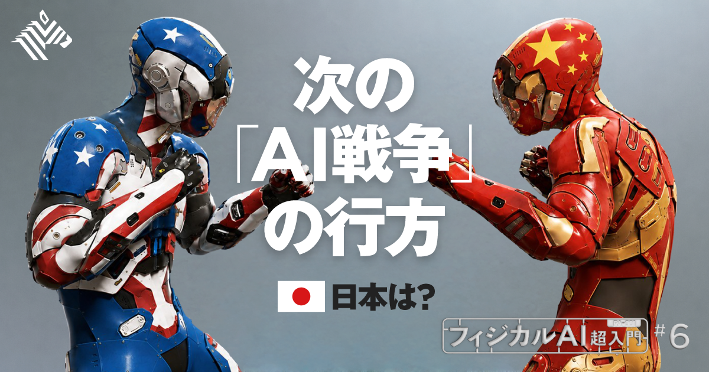
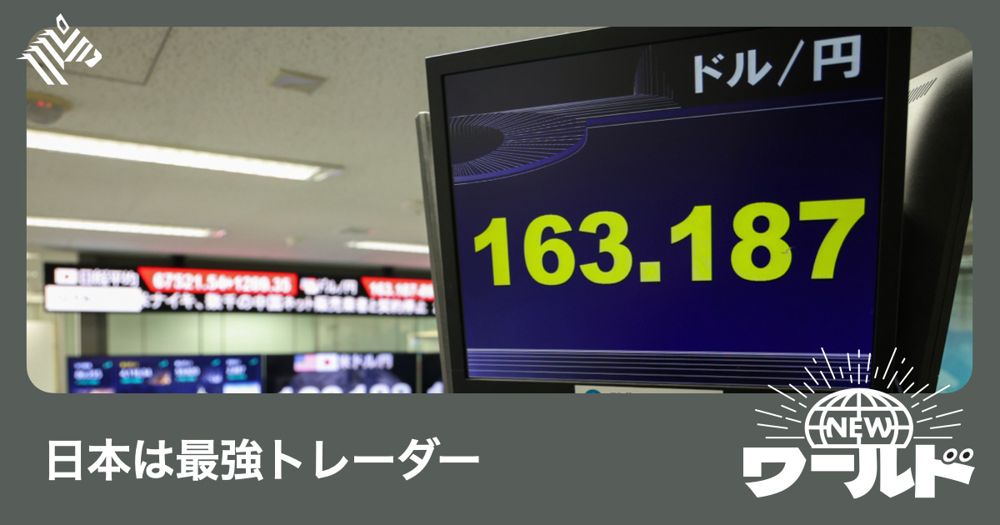

01
【直撃】世界が「ロボットの脳」に殺到、日本は間に合うか
発行日時：2026年8月21日 05:30 JST ・ NewsPicks編集部

あなたに関係ありそうな理由
AIの競争力はモデルの性能だけでなく、実際の現場で安全に動かし、学習データを循環させる運用まで設計できるかで決まるためです。
概要
人型ロボットやアーム、四足歩行ロボットを動かす「フィジカルAI」の基盤モデルを追ったNewsPicks編集部の記事です。米スタートアップのSkild AIは、ロボットの種類をまたいで動作を学ばせるモデルを開発し、設立から約3年で企業価値がおよそ2兆円に達したといいます。投資家にはジェフ・ベゾス氏、NVIDIA、ソフトバンクグループが名を連ねます。ここでいう「脳」は、言葉を返す生成AIではなく、現実の空間で機械をどう動かすかを出力する仕組みです。最大の難所は、モデルを作ることだけではありません。現場データがなければロボットは賢くならず、賢いロボットがなければ現場へ置けない、という循環があります。Skild AIは人の動画とシミュレーションで出発し、ロボットをサービスとして導入して実データを集め、改良に戻す流れを取ると説明します。モデルを売るだけでなく、稼働から学習を回すことが事業の核です。日本でも、ソニー、ホンダ、NEC、ソフトバンクなど44社が参加するNoetraや、政府による2030年度までの1兆円規模の支援が動き始めました。記事は、日本の高い品質要求や製造現場のデータが強みになり得る一方、ChatGPTのような転機を待たず、今から実装を始める必要があると指摘します。Skild AIのCEOは、汎用ロボットが消費者の手元で普通に使われる段階はまだ遠く、実装には安全性、動作速度、承認の壁があると語ります。だからこそ、導入先を増やすだけでなく、限られた作業で何を失敗とし、どんなデータを残すかをそろえる必要があります。表示コメントでは、SNSの見栄えのよい実演だけで性能を判断せず、導入先で安全、速度、精度を満たせているかを見るべきだという論点が出ました。また、日本の暗黙知はそのままでは学習データにならず、センサー、カメラ、QRなどで行動を記録する設計が必要だという意見もあります。フィジカルAIはソフトウェアの競争であると同時に、ハードウェア、保守、現場の受け入れを含む運用の競争です。今後は、採用社数よりも、どの現場で何の作業を任せ、失敗をどう減らし、データを次の改善へつなげたかを確認したい記事です。
仕事や会話で使える一言
フィジカルAIの勝負は、モデル性能だけでなく、現場データを回せる仕組みづくりにある。
NewsPicks原文を読む
02
【衝撃】世界中のマイナー言語は「新しい金脈」だ
発行日時：2026年8月21日 05:30 JST ・ NewsPicks編集部
あなたに関係ありそうな理由
生成AIでコンテンツの到達市場を広げるなら、技術導入と同時に、本人の同意・対価・利用範囲を決める必要があるためです。
概要
少数言語向けの吹き替えを生成AIで事業にできるかを追ったNewsPicks編集部の記事です。SNSでは、声優の声を模した動画がTikTok、YouTube、Xに広がり、日本のNPOの調査では、2025年6月以降の約2カ月で疑いのある投稿が345件、再生回数が2億3400万回に達したと紹介されます。俳優の津田健次郎氏は5月、TikTokに削除を求める訴えを起こしました。法務省は8月7日、俳優の声にも民事上の保護が及び得るとの考え方を示したものの、専用の新法があるわけではありません。こうした状況で、Titan Intelligenceは動画翻訳・音声クローンの「mimidub」を約200言語に対応させています。創業14人の同社は、採算が合わず吹き替えが作られにくかった言語へ日本の映像やアニメを届け、海賊版対策と海外ライセンスを両立させることを狙います。政府はコンテンツの海外売上を2033年に20兆円へ伸ばす目標を掲げており、少数言語での展開はその裾野を広げる手段にもなります。ただし、機械音声だけで作品の感情表現が十分になるとは記事も見ていません。人気が確かめられた市場で人によるローカライズへつなげる使い方も想定されます。記事が強調するのは、AIが俳優を置き換えるという発想ではなく、出演者が許諾した声を使って市場を広げる仕組みです。Titan Intelligenceは出演者の同意を得て海外販売し、固定報酬や利用量に応じた支払いを想定します。作品の商業検証を進め、1年以内のライセンス開始を目指すといいます。ElevenLabsも、日本の声優事務所との関係を築き、出演者が使ってよい作品、買い手、価格を設定し、透かしで管理する考えを示します。ドイツのNetflix契約を巡る争議や、米国ゲーム俳優の11カ月に及ぶストライキは、無断学習と対価の問題を先送りできないことを示しました。表示コメントでも、低コスト化で少数言語市場を開く可能性と、同意・支払い・セキュリティを先に作る必要性が指摘されています。今後は翻訳品質だけでなく、誰が何に使えるのか、出演者へどう収益が戻るのか、透かしが実際に機能するのかを見たい記事です。
仕事や会話で使える一言
生成AIで市場を広げるなら、同意・対価・コントロールを先に設計する。
NewsPicks原文を読む
03
【衝撃試算】日本は為替介入で「5.7兆円」荒稼ぎしていた
発行日時：2026年8月21日 05:30 JST ・ The Economist

あなたに関係ありそうな理由
為替介入の見出しを読む際は、損益だけでなく、会計、公的債務、家計の購買力、政策への信認を分けて見る必要があるためです。
概要
日本が為替介入で約5.7兆円を得た可能性があるというThe Economistの記事です。記事は、円が1ドル163円を超えた7月末に日本がドルを売って円を買う介入を行い、保有ドルを1ドル100円未満で積み上げ、160円前後で売ったと仮定すれば、最大約360億ドル、約5兆7000億円の差益になると試算します。ロイターによれば、財務省と日銀は介入に950億ドル超、約15兆2000億円を使ったとされます。記事は、米国のベッセント財務長官が米国の外貨準備を使った円買いを支援したとし、トランプ氏がその協力を強調した場面にも触れます。日本の公的部門はGDP比56％を超える海外純資産を持ち、低利の円で資金を調達し、海外資産から収益を得る巨大なキャリートレードの担い手にも見える、というのが記事の問題提起です。過去四半世紀の年率収益率は5.8％とされ、その多くは未実現の評価益です。インフレが日銀目標に近づき、2027年7月までに利上げがあり得るという市場見通しも、円建て負債のコストを意識させます。ただし、表示コメントは見出しをそのまま受け取ることに警鐘を鳴らします。為替介入の目的は急激な変動の抑制で、利益を狙うものではないという指摘です。外為特会は毎年の基準レートで評価されるため、163円で売っても会計上の実現益は単純な売買差額とは限らず、売却代金はまず短期国債の償還に回るという説明もありました。また、差益は介入が生んだものではなく、それ以前の円安で積み上がった価値を実現したにすぎない、という意見もあります。記事自体も、950億ドルの円買いは利払いのある公的債務の1％未満にすぎず、日銀が国債購入で円の流動性を補えば効果は単純でないと述べます。実際に円買いを実施する主体、外貨準備の運用、金融政策の資金供給を一つの数字で評価できないことが分かります。将来の金利上昇が外貨資産の収益と円建ての調達費をどう変えるか、市場の一時的な損益と継続的な財政負担を区別することも必要です。今後は、為替水準、外貨準備の会計、国債費、家計への影響、介入の政策目的を混同せず、評価の前提を明確にして追う必要があります。
仕事や会話で使える一言
為替介入の損益は、政府の勝ち負けではなく、会計・購買力・政策信認を分けて見る。
NewsPicks原文を読む
04
【世界のニュース７選】米国発「対イラン経済戦」 中国は牽制
発行日時：2026年8月21日 17:00 JST ・ The Economist
あなたに関係ありそうな理由
制裁、債券、軍事、海運、消費の変化は別々の話に見えても、価格や物流、企業の調達へ波及し得るためです。
概要
The Economistの「The world in brief」を独占翻訳した、世界のニュース7選です。中心に置かれるのは、米国のベッセント財務長官がイランに対して史上最も厳しい制裁を講じる方針を示し、中国にも連携を促したことです。中国は、制裁や圧力は問題解決を助けないと警告し、外交的な解決を求めました。記事は、中国がイランの輸出石油の80％超を購入していると伝え、制裁の実効性が大口の取引先をどう巻き込めるかに左右される構図を示します。米国の債券市場では、長期国債の買い戻し拡大というベッセント氏の方針にもかかわらず、30年債利回りが上昇しました。財務長官自身は24時間以内の動きはノイズだと述べましたが、政府債務が初めて40兆ドルを超え、インフレへの懸念が根強いという背景があります。ウクライナではロシアの空爆でキーウの少なくとも17人が死亡し、ゼレンスキー大統領はパトリオットなど防空ミサイルの不足を訴えました。EUは弾道ミサイルを迎撃する能力の提供を加盟国と協議しているといいます。海運では、エリトリア船籍の石油タンカーがソマリア海賊に乗っ取られ、今年1月から5月にかけて同地域で少なくとも17件の海賊関連事件が記録されたと紹介されます。記事によれば、その船はイランの「影の艦隊」に属するとみられ、同地域では4日間で2隻目の強奪でした。米空母エイブラハム・リンカーンの中東離脱、キューバへの追加制裁、ウォルマートの既存店売上の減速、中国のチョコレート消費が世界の2％という話題も並びます。ばらばらに見えるニュースですが、制裁、軍事、海運、金利、消費はいずれも国境を越えた供給や価格に影響します。イランを巡る緊張が進めば、原油そのものだけでなく、決済、船籍、保険の引受条件が先に変わる可能性があります。表示コメントでは、制裁強化より自国民を大切にすべきだという感想が寄せられました。今後は、制裁の対象と例外、海運保険や運賃、防空支援、長期金利、消費指標をそれぞれ追い、各国の声明と実務上の取引制約を照らして、短期的な市場反応と実際の政策実行の差、影響の順序も確かめることが重要です。判断には継続確認が必要です。
仕事や会話で使える一言
国際ニュースは、制裁・海運・金利・消費を一つの話にせず、波及経路ごとに追う。
NewsPicks原文を読む
05
【リーダー論の最終形態】コンテキストリーダーシップ入門
発行日時：2026年8月21日 09:00 JST ・ NewsPicks Studios
あなたに関係ありそうな理由
会議や組織運営では、正しい結論を急ぐ前に、参加者が同じ前提と状況認識を共有できているかが成果を左右するためです。
概要
NewsPicks StudiosのNewSchool Movieで、研究者の山崎秀夫氏が「コンテキストリーダーシップ」を解説する動画企画です。公開ページは、従来のリーダーシップ論が「優れたリーダーは何をするか」という行動の型に寄りがちだと置き、その行動が良いか悪いかは状況、すなわち文脈によって変わると問題を提起します。ここでのリーダーは、単に意思決定を下す人ではありません。いま何が起きているかを読み、人が取り組む仕事に意味を与える「文章の書き手」として捉え直されます。講義では、文脈、複数のリーダーシップスタイル、文学やリベラルアーツを人を動かすための「ストーリー編集」に生かす視点を扱うと説明されています。動画の詳細視聴にはPremiumが必要ですが、表示コメントには主な論点の手がかりがあります。助言は文脈を離れると理解されにくいこと、フォロワーなしにリーダーシップは成立しないこと、率先垂範だけでは組織がリーダー自身の能力で頭打ちになり得ることが挙げられています。専門家のコメントは、文脈を個人間の小さな関係だけでなく、チーム、組織、社会へ広がる層として捉える視点も示しました。さらに、人生は仮説の集積として始まること、AIが苦手とする点にも話が及ぶ構成です。NewsPicksのCOOは、組織の「風景」を交換することが文脈の共有になり、文脈を伴うトップダウンは機能しやすいとコメントします。一方で、CEOは文脈だけでは足りず、長期の視点や信頼も要ると補足しました。大事なのは、文脈を説明すれば自動的に人が動くと考えないことです。会議なら、結論を提示する前に、なぜ今この判断が必要なのか、誰のどの制約を前提にするのか、成功を何で測るのかを言葉にする。単に情報を共有するだけでなく、相手がどう解釈したかを聞き返す過程まで含めて、文脈づくりになります。決まった後も、状況の変化に合わせて説明を更新し、フォロワーからの反応で前提を確かめる必要があります。その共有があって初めて、各人の行動を同じ目的へつなげられます。指示の巧拙ではなく、意味づけと関係づくりをどう進めるかを考える入口になる記事です。
仕事や会話で使える一言
リーダーシップは「何をするか」だけでなく、「どの文脈で意味づけるか」で決まる。
NewsPicks原文を読む